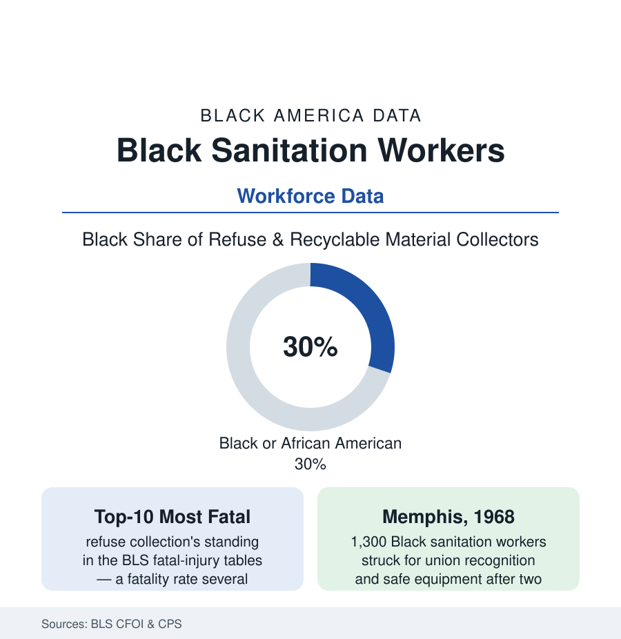

Black Employment
Sanitation Workers: The Most Dangerous Essential Job in the City
Refuse collection ranks among America's most fatal occupations, and its workforce is heavily Black — a file that runs from the Memphis strike to the modern injury tables.

The truck comes before dawn in every city in this atlas, and the workforce riding its back step is disproportionately Black — roughly thirty percent of refuse and recyclable material collectors in the labor data, higher in the municipal fleets of the Southern and industrial cities — doing work the Bureau of Labor Statistics ranks, year after year, among the most fatal occupations in America. The sanitation file is where the employment section's themes — essential work, bodily risk, the public payroll, and a union — meet in their oldest modern form. This article reads it.
The Danger Tables
The Census of Fatal Occupational Injuries gives refuse collection a fatality rate several times the all-worker average — top-ten territory in most years' tables, in the company of logging, roofing, and fishing — and the injury data beneath the fatal line run deeper: the struck-by and caught-in events (the truck's machinery, the route's traffic — the collector working in the street, at dawn, in the weather, beside drivers the safety campaigns plead with), the musculoskeletal ledger of the lifting era (the can-and-shoulder decades' backs and shoulders in the workers'-comp files, the automated side-loader's arrival changing the injury mix route by route in the fleet data), and the exposure file (the biohazard and chemical roulette of the unmarked bag — the needle-stick and hazmat rows of the municipal risk reports). The workforce absorbing this is the one on the step: the CPS composition tables (Black and Hispanic majorities on many municipal crews), the age profile (the job's physical prime demanded against careers that run long in the public tier), and the two-tier structure the privatization era built (the municipal crew's civil-service wage, pension, and comp protections against the private hauler's route hands at lower wages and thinner coverage in the industry data — the same truck, two labor regimes, sorted substantially by the map's old lines in the Southern cities' contracting records).
Memphis: The File's Founding Document
The occupation's place in the national record was set in 1968: two Memphis collectors, Echol Cole and Robert Walker, crushed in a malfunctioning truck the city had been warned about; 1,300 Black sanitation workers struck for recognition of their AFSCME local, for safety, for wages that did not require food stamps at the top step — carrying the placards whose four words became the era's whole argument, I AM A MAN. The strike's data are labor history's canon: the city's refusal, the marches and the injunctions, the National Guard in the streets of the cities file's Memphis, and the Reverend Dr. Martin Luther King Jr.'s arrival to lead the movement's unfinished economic campaign — his assassination at the Lorraine Motel on April 4, in the city for the sanitation workers, the strike settled sixteen days later with recognition won. The local the strike built still represents the workforce; the museum at the Lorraine preserves the file; and every municipal negotiation in the occupation since has operated in its shadow — the strike is why sanitation, alone among the service files, carries a founding document the whole country has read. The modern workforce data run from that baseline: the municipal tier's Black employment share (the post-strike public payroll becoming, in Memphis and across the urban South, a first-rank Black employer — the public-sector file's own numbers rooted here), the union density remaining the occupation's high ground in the municipal tier against the private tier's open-shop map.
The Modern Ledger
The current numbers: median wages in the mid-forty-thousands for collectors in the BLS tables — the municipal tier's benefits carrying the real compensation — the automation frontier arriving as the single-operator truck (the route consolidated, the second and third crew jobs engineered away in the fleet plans, the unions negotiating the transition's terms city by city), the recycling economy's own workforce file (the materials-recovery facilities' sort lines, among the industry's most dangerous indoor jobs in the safety literature, staffed on the same demographic lines), and the storm-and-crisis surges that periodically remind the cities what the service is (the hurricane debris contracts, the pandemic's tonnage spike in the residential data — the essential designation, again, without the essential wage movement in the private tier). The occupation's institutional memory holds its own statistics: the Memphis local's safety committees, the AFSCME fallen-worker records, the street namings and memorials the cities have begun to build for collectors killed on route — the data's human index, kept by the workforce itself.
Reading the Sanitation Data
Thirty percent of one of America's most dangerous jobs, a founding strike that cost a movement its leader, and a two-tier modern workforce still sorted by the old map: sanitation is the employment file in its most concentrated form — the city cannot run a day without this labor, and the labor's price, in safety and in wages, is published by the Bureau every year. The truck comes before dawn. The data are already awake.
More in Black Employment
The Black Unemployment Rate: The Two-to-One Pattern
Black unemployment runs at roughly twice the White rate — 5.5 percent against 3.3 percent in annual averages — a ratio stable across five decades of federal data. How it is measured and why it persists.
Black Median Weekly Earnings: The 80-Cent Ratio
Black full-time workers earn a median of about $900 a week — roughly 80 cents for every dollar White workers earn. The BLS earnings data by group, gender, and occupation.
Black Labor Force Participation: Working at National Rates
Black labor force participation runs at roughly the national rate — and Black women participate at higher rates than White women. The BLS participation data.
Source: U.S. Bureau of Labor Statistics Census of Fatal Occupational Injuries and CPS; AFSCME records; City of Memphis sanitation history and the National Civil Rights Museum.